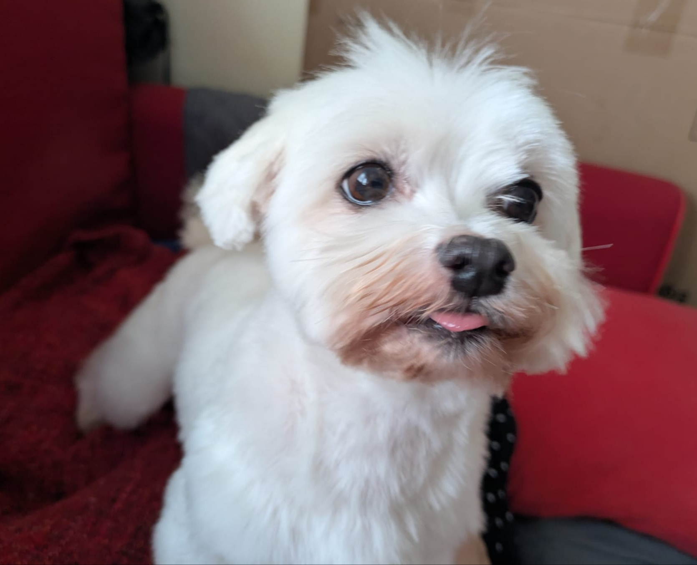
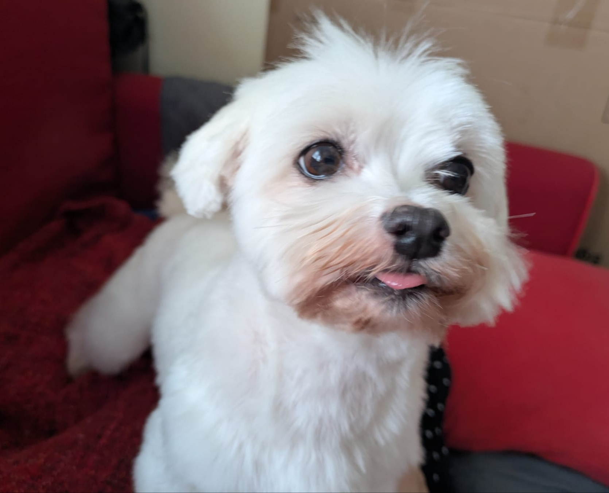

Descubre a Nutri la bichona de campo
El bichón maltés es una raza pequeña, y cariñosa. En este sitio aprenderás sobre sus características, cuidados y mucho más.
El bichón maltés es una raza pequeña, y cariñosa. En este sitio aprenderás sobre sus características, cuidados y mucho más.
